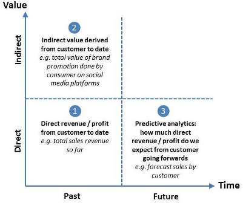

Your web analytics data in your hands
The idea behind customer lifetime value* (CLV) is simple: it is the total amount of value derived by a business from a customer over the customer’s complete lifetime engaging with the business / product / company. Calculating and maximizing a customer’s lifetime value contrasts with other approaches to increasing value e.g.:
Maximizing customer lifetime value is generally the most sustainable way to drive value growth for any consumer-facing business, because:
Maximizing customer lifetime value is only possible if you can measure it (and therefore track improvements over time). So measuring customer lifetime value is critical to driving long term growth for consumer-facing businesses.
Traditionally, web analytics tools have sucked at enabling analysts to calculate customer lifetime value:
Fortunately, SnowPlow addresses the above limitations, enabling analysts to calculate customer lifetime value as detailed below.
There are diffent levels of sophistication to calculate customer lifetime value. The diagram below illustrates some different approaches:

We can distinguish different levels of sophistication when measuring customer lifetime value:
Which approach you adopt will depend on your own circumstances, data quality and customer understanding: a cruder approach will often suffice and a more sophisticated approach may be misleading if there isn’t the customer understanding in place to justify the assumptions an analyst uses in predicting future revenue / profits per customer.
In all cases, however, SnowPlow provides a solid foundation for doing the customer-lifetime value calculations. Below, we detail how to calculate customer lifetime value using a number of approaches:
SnowPlow makes it easy to sum the amount of direct revenue attributable to each customer over their entire user history.
Let’s start with the example of an online retailer, that has implemented SnowPlow so that every time an order is completed, an event is fired where:
ev_category = 'ecommerce'
ev_action = 'order-complete'
ev_label = *ORDER_ID* (for joining data with transaction system)
ev_value = *total revenue*Then to calculate the total revenue by customer over time, we’d simply execute the following query:
SELECT
user_id,
SUM(ev_value)
FROM events
WHERE ev_action LIKE 'order-complete'
GROUP BY user_id
If there are several different types of events where revenue is directly attributable (e.g. customer submits a lead form as well as buys a product), we simply add the additional event types to our WHERE clause:
SELECT
user_id,
SUM(ev_value)
FROM events
WHERE ev_action LIKE 'order-complete'
OR ev_action LIKE 'submit-lead-form'
GROUP BY user_id
Many businesses monetize customers on multiple channels, not just web. To sum revenues across all those channels, you will need to join your web analytics data with your offline sales data on a per-customer basis. Details of how to do this is documented here.
For many online businesses, customers engage in multiple value-generating activities that only generates revenue indirectly. To give some examples:
How you ascribe to actions like the ones listed above will be subject to a blog post in the future. (There are wide range of possible techniques: because SnowPlow gives you access to granular event-level detail, it enables you to use a wide range of techniques to analyse the associated value.) The important thing to understand from the perspective of this guide is that there is a value that you ascribe at the time you perform the analysis. When you perform the anaysis, you create a table with the different values:
CREATE TABLE events_by_value (
ev_action STRING,
value FLOAT)
Populate the above table with each different type of event and the value you want to ascribe it. You can then add up the value of actions that indirectly drive revenue by joining the above table with the SnowPlow events table:
SELECT
e.user_id,
SUM(v.value)
FROM events e
JOIN events_by_value v
ON e.ev_action = v.ev_action
GROUP BY user_id
You would then sum the indirect value by user_id generated by the above query with the direct revenue attributable to each user calculated in the previous section
Like ascribing value to actions that only indirectly generate revenue, documenting all the different approaches to estimating future value from each customer is beyond the scope of this guide, it’s something we will cover in a blog post in due course.
Here, we assume that you have a process of segmenting your customers, and have a future value you assign to customers in each of those segments. In this circumstance, you will need to create a two tables in Hive / Infobright - the first records each segment and the future value ascribed to people in each segment:
CREATE TABLE future_value_by_segment (
segment STRING,
value FLOAT )
And another table that maps user_ids to each segment:
CREATE TABLE user_ids_by_segment (
segment STRING,
user_id STRING
)
You would populate the above 2 tables and then execute a query like the following, to calculate estimated future value for each customer:
SELECT
user_id,
SUM(value) AS future_value
FROM future_value_by_segment f
JOIN user_ids_by_segment u
ON f.segment = u.segment
GROUP BY user_id
The resulting future_value by user_id would be added to the past value calculated for each user (including both direct revenue and indirect value, as desired) to derive an overall figure for customer lifetime value for each user_id.
Read this Keplar blog post on calculating customer lifetime value, find out how to measure user engagement using SnowPlow find out about how to perform cohort analysis using SnowPlow.